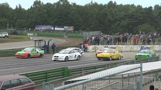
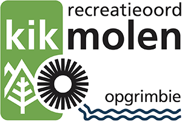

OPGRIMBIE
- Maaslands kerkdorp
- Behoort tot de gemeente Maasmechelen
- Gelegen in provincie Limburg
- Opgrimbie telt 3630 inwoners
- Toegangspoort tot Nationaal Park de Hoge Kempen
Duivelsberg

Het Duivelsbergcircuit is een rallycrosscircuit aan de voet van de
Duivelsberg in Maasmechelen-Opgrimbie, Belgie.
Het circuit is vermeld voor 60% uit asfalt en 40% uit losse grond te bestaan.
Op het circuit worden races gereden voor
het Belgisch en Europees kampioenschap rallycross.
Camping Kikmolen

Pal in het RivierPark Maasvallei, en aan de rand van Nationaal Park Hoge Kempen, ligt camping Kikmolen.
De unieke locatie staat garant voor een brede waaier aan natuurpracht en maakt van de
Kikmolen de ideale vertrekplaats voor fiets-of wandeltochten.
Toe aan een dagje stad?
Binnen een kwartiertje sta je in wereldstad
Maastricht!
Uiteraard heeft camping Kikmolen alle faciliteiten die je van een hedendaagse camping verwacht.